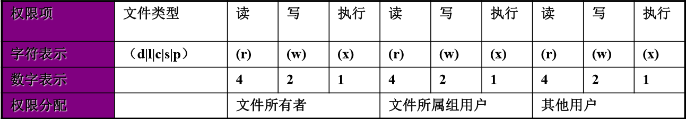

Linux系统中不仅是对用户与组根据UID,GID进行了管理，还对Linux系统中的文件，按照用户与组进行分类，针对不同的群体进行了权限管理，用他来确定谁能通过何种方式对文件和目录进行访问和操作。
一、文件权限
文件的权限针对三类对象进行定义
owner 属主，缩写u
group 属组，缩写g
other 其他人，缩写o
每个文件针对每类访问者定义了三种主要权限
r：Read 读
w：Write 写
x：eXecute 执行
另 X：针对目录加执行权限，文件不加执行权限（因文件具备执行权限有安全隐患）
注意：root账户不受文件权限的读写限制，执行权限受限制
- 对于文件和目录来说，r，w，x有着不同的作用和含义：
针对文件：
r：读取文件内容
w：修改文件内容
x：执行权限对除二进制程序以外的文件没什么意义
针对目录：目录本质可看做是存放文件列表、节点号等内容的文件
r：查看目录下的文件列表 w：删除和创建目录下的文件 x：可以cd进入目录，能查看目录中文件的详细属性，能访问目录下文件内容（基础权限）

用户获取文件权限的顺序：首先看是否为所有者，如果是，则后面权限不看；再看是否为所属组，
如果是，则后面权限不看。
二、修改文件访问权限的方法
chmod 修改权限 change mode
方法1：mode法
格式：chmod who opt per file
who：u g o a（all）
opt：+ – =
per：r w x X
方法2：数字法
格式：chmod XXX file
| rwx | rw- | r– |
|---|---|---|
| 111 | 110 | 100 |
| 7 | 6 | 4 |
r：4
w：2
x：1
例：chmod 764 file 给file文件添加 rwxrw-r– 权限
chmod -R +X dir 给dir目录添加X执行权限，dir目录下文件不添加执行权限
（如果dir目录下有文件已具备执行权限，则添加该文件执行权限）
三、UMASK值
umask值的作用：用来设置限制新建文件权限的掩码。当新文件被创建时，其最初的权限由文件创建掩码决定
对目录：
umask+default=777（dir）
对文件：
666-umask：观察结果，如果有奇数，奇数位+1，偶数不变
四、三种特殊权限suid、sgid、sticky
suid
作用：让本来没有相应权限的用户运行这个程序时，可以访问他没有权限访问的资源。
suid权限位 位于所有者的执行权限位上，如果一个文件具有suid权限，则所有者执行位为s，文件表现为红色背景
例：
1
2ll /usr/bin/passwd #查看/usr/bin/passwd文件的权限
-rwsr-xr-x. 1 root root 30768 Nov 24 2015 /usr/bin/passwd
给file文件增加suid权限
1 | chmod u+s file # suid的mode法 |
注：suid只适合作用在二进制程序上
sgid
作用1：给一个用户继承二进制程序所有组拥有的权限
作用2：作用在目录上时，使一个目录下的新建的文件继承目录的所属组
sgid权限位 位于所有组的执行权限位，如果一个文件具有suid权限，则所有组的执行位为s，文件表现为黄色背景
例：
1
2
3ll `which cat`
-rwxr-sr-x. 1 root root 48568 Mar 23 2017 /bin/cat
给file文件增加sgid权限
1
2chmod g+s file # sgid的mode法
chmod 2755 file # sgid数字法表示为2
sticky
作用：作用于目录上，此目录的文件只能被所有者删除
sticky权限位位于其他的执行权限位上，如果一个文件具有sticky权限，则其他的执行位为t，目录表现为绿色背景
如：
1
2ll -d /tmp
drwxrwxrwt. 17 root root 4096 Apr 4 10:02 /tmp给dir目录添加sticky权限
1
2chmod o+t dir # sticky的mode法
chmod 1777 dir # sticky数字法表示为1
五、ACL访问控制列表
作用：实现更加灵活的权限管理，打破了三类用户的权限管理
添加ACL权限
1
2
3
4
5
6
7setfacl -m u:lpx:0 file # 使lpx账户对指定file文件无权限
setfacl -m u:mage:rw file # 使mage账户对指定file文件有读写权限
setfacl -m g:g1:rw file # 使g1组对指定file文件有读写权限
getfacl file # 查看指定file文件的ACL权限ACL权限执行顺序类似于用户获取文件权限的顺序，getfacl顺序从上到下执行，一旦生效，下面的将不再生效（如果属于多个组，权限累加）
删除ACL权限
1
2
3setfacl -x u:lpx file 删除lpx账户对指定file文件的ACL权限
setfacl -x g:g1 file 删除g1组对指定file文件的ACL权限ACL权限下的mask
1
2
3
4
5
6
7设置用户对指定文件所能拥有的最大权限（限高作用）
setfacl -m mask::r file 使指定文件file所拥有的最大权限位读r
setfacl -x mask::r file 取消指定文件file的最大权限限制mask
setfacl -b f1 取消f1文件所有的ACL权限ACL生效顺序：所有者、自定义用户、自定义组、其他人备份和恢复ACL权限
1
2
3getfacl -R /tmp/dir1>acl.txt 将dir1目录下ACL权限备份
setfacl -R –set-file=acl.txt /tem/dir 恢复dir1目录下ACL权限
六、文件权限操作的常用命令
chown 设置文件所有者（普通用户无法修改文件所有者）
1
2
3
4-R 递归
user：group 同时修改所有者，所有组
chgrp 设置文件所属组（普通用户要想该所属组，前提是文件所有者为自己，自己在所属组中）
-R 递归chmod 设置指定文件权限
1
2-R 递归
–reference=f1 f2 f3 参考f1文件权限设置f2，f3文件chattr 给指定文件添加保护，避免root账户误操作
1
2
3
4
5+i 锁定文件，不能删除，不能改名，不能更改内容
-i 解锁+i
-a 锁定文件，不能删除，不能改名，但可追加内容（追加重定向）
-a 解锁+a
+A 指定文件读时间atime不再更改lsattr 查看指定文件是否有锁定状态
setfacl 设置文件ACL权限
1
2
3
4-m mask::r file 使指定文件file所拥有的最大权限位读r
-x mask::r file 取消指定文件file的最大权限限制mask
-b f1 取消f1文件所有的ACL权限
-R –set-file=acl.txt /tem/dir 恢复dir1目录下ACL权限getfacl 查看文件ACL权限